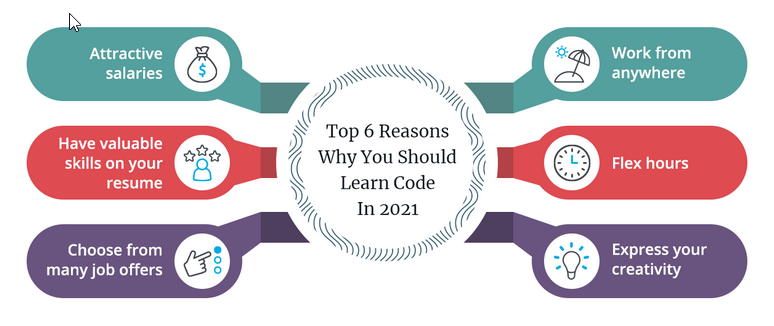

Next >> w1_task
About
請各學員自行準備一副有線耳機, 若使用手機觀看影片, 則可以準備手機適用的有線或無線耳機 .
本課程為機械設計工程系大一的計算機程式課程, 課程目標在教導學員如何利用網站整理與機械設計相關的資訊, 並能直接在網站與伺服器中編寫簡單的 HTML、Javascript (using Learn Javascript)、Brython 與 Python 程式 (using 100 Days of Code and CS50), 目的是能在隨後的網際內容管理、電腦輔助設計與實習以及協同產品設計實習等課程中加以應用.
basic_portable_python.7z (下載 15MB, 解開後 55MB)
下載 Portable_2023_fall_1.3g_5g.7z (需要下載密碼)
為什麼需要學習計算機程式?
https://flatironschool.com/blog/reasons-why-you-should-learn-computer-programming/

https://www.indeed.com/career-advice/career-development/why-you-should-learn-programming
計算機程式之於機械工程師:
https://skill-lync.com/blogs/reasons-mech-auto-engineers-learn-programming
https://www.imeche.org/news/news-article/future-skills-week-why-programming-is-key-to-engineering-communication
In the past decade, the need for computer programming skills has been emphasised across all STEM (Science, Technology, Engineering and Mathematics) sectors, and engineering is no exception. The axiom "coding is the new literacy" has made its way into news headlines and professional development guides in many industries. Although the phrase might be something of an exaggeration, universities are beginning to integrate coding into their engineering curricula. The goal, explains Dr Hongwei Zhang, deputy head of the Department of Engineering and Mathematics at Sheffield Hallam University, is not to create a workforce of computer scientists, but to allow engineers to communicate more effectively with tech-focused colleagues.
"We are planning to introduce more automated systems in the second and third year of our mechanical engineering course," he says. "So students will be doing programming that is necessary for the application of Industry 4.0. They may not need to do the programming themselves when they have entered into the workforce after graduation, but they need to understand how programming is done so they can talk to computer scientists and electrical engineers to get something automated."
https://www.javatpoint.com/python-for-mechanical-engineers (需要將重點整理至個人網頁)
https://github.com/angelsolaorbaiceta/Mechanics (需要將重點整理至個人網頁)
參考:
how-to-make-almost-anything-修課經驗分享
https://fab.cba.mit.edu/classes/MAS.863/
課程環境:
當廣域網路暢通時:
以 Ubuntu 帳號執行網站編輯器, 程式編寫與心得說明後轉為靜態網頁後, 程式原始碼存至 Gist, 在靜態網站中執行, 靜態網站則以 Github Pages 方式運作.
也可以利用 Replit 帳號從 Github 將網站倉儲 import 後, 在 Replit 中執行網站編輯器, 將程式存至 Gist, 在靜態網站中執行, 靜態網站則以 Github Pages 方式運作.
在無廣域網路連線時:
自行利用區域網路所提供的可攜程式套件, 以及 cmsimde 建立近端網站進行課程項目練習.
利用既有帳號 (Google、Github、Facebook or Apple) 登入 Replit:
1. https://youtu.be/PkZNo7MFNFg (Youtube: Learn Javascript for Beginners)
2. 在 Replit 平台上學習 Python: https://replit.com/learn/100-days-of-python ( 不同帳號對應使用資源 )
Youtube: https://www.youtube.com/watch?v=ASZVEe2WkI4
Harvard CS50 Introduction to Programming with Python (Youtube)
Advanced Python (Youtube)
學員主要網站:
個人網站: github_帳號.github.io ( Github Pages )
分組網站: 由 Github Classroom 指定的分組作業網站
開場:
電腦輔助設計室、協同設計室與工作站室介紹
網路設定
Windows 基本操作 ( Beginning Windows 10 , Windows 11 Made Easy )
中文注音 、與 英文輸入 練習 ( 行列輸入法 )
命令列與批次檔案
Powershell 與網路設定
網路軟硬體資源介紹 ( ChatGPT 、 VPN 、 PKI 、 Springer 、操作系統與其他教育版套件下載與安裝)
建立帳號與網站:
利用已經帶有 Brython 執行環境的倉儲, 在設定學員 Github Classroom 首次作業時, 即經由 template 置入, 因此學員只要:
利用學校 email 帳號, 建立 Github 帳號, 以英文姓名縮寫加上一組數字, 選擇最短帳號名稱 例如: jfk40723199, jfk 為其自選的姓名縮寫, 而隨後則加上各自的學號.
擁有 Github 帳號後, 即可透過 Github Classroom assignment 連結取得作業倉儲, 自行在倉儲中設定 Github Pages 後, 即可啟用作業網站 (以下 所謂網站均指靜態網站 , 而用來編輯網站內容的 動態網站, 則統稱為網際內容編輯器 , 使用動態網站的目的在編輯靜態網站的內容). 網站內容經過編輯之後, 必須建立新的網站內容 (使用 generate_pages), 然後將新的網站內容更新到對應的 Github 倉儲中 (稱為改版, 其過程經歷 git add, git commit 與 git push 等階段).
git 為分散式版次管理系統工具.
git add
git commit
git push
利用 Github Classroom 給每一位學員一個倉儲, a.k. (also known as) 網站 (靜態與動態)
每四位學員一組建立一個協同倉儲, a.k. 協同網站 (靜態與動態)
靜態網站: Github Pages, Nginx (under public_html) 或 Fossil SCM (under documentation)
動態網站: localhost, replit or Ubuntu server
課程評分: 線上測驗、期中網站與簡報、期末網站與簡報.
線上測驗: w1 建立帳號後 (請將密碼寫入手機的備忘錄), 每週不定時進行.
期中網站與簡報: 期中考前一週開始進行.
期末網站與簡報: 期末考前一週開始進行.
期中成績: 期中考與之前各週線上測驗成績平均
學期成績: (期中成績與之後各週線上測驗成績平均)*60%+(期中網站與簡報成績)*20%+(期末網站與簡報成績)*20%
repo: https://github.com/mdecycu/cp2023
site: https://mde.tw/cp2023 or https://cad2.cycu.org/~yen/cp2023
MS Teams 代碼: plmm43c
行事曆
全頁檢視
Next >> w1_task